如果所有人都在睡觉，那会有谁去唱歌？
——维克多-崔

滑动下方区域
查看完整歌词
《平静的夜》
▼
Крыши домов дрожат под тяжестью дней
屋顶在白日的重压下颤抖着
Небесный пастух пасет облака
飞天的牧童赶着云团
Город стреляет в ночь дробью огней
城市将一梭梭光射进黑夜
Но ночь сильней
夜却黑得如此深沉
ее власть велика
威力无边
Тем, кто ложится спать
那些躺下睡去的人
Спокойного сна
祝你们晚安
Спокойная ночь
夜是如此静寂
Тем, кто ложится спать
那些躺下睡去的人
Спокойного сна
祝你们晚安
Спокойная ночь
夜是如此静寂
Я ждал это время
我盼了这时辰许久
и вот это время пришло
它终于来了
Те, кто молчал
曾经缄默的人们
перестали молчать
不再沉默
Те, кому нечего ждать
那些无所顾忌的
садятся в седло
坐上鞍子
Их не догнать
追不上他们了
уже не догнать
已经无法追上
Тем, кто ложится спать
那些躺下睡去的人
Спокойного сна
祝你们晚安
Спокойная ночь
夜是如此静寂
Тем, кто ложится спать
那些躺下睡去的人
Спокойного сна
祝你们晚安
Спокойная ночь
夜是如此静寂
Соседи приходят
邻居们过来抱怨
им слышится стук копыт
说他们听见蹄声
Мешают уснуть
无法入睡
тревожат их сон
难以安眠
Те, кому нечего ждать
那些无所顾忌的
отправляются в путь
已经上路了
Те, кто спасен
他们得了救
те, кто спасен
得了救
Тем, кто ложится спать
那些躺下睡去的人
Спокойного сна
祝你们晚安
Спокойная ночь
夜是如此静寂
Тем, кто ложится спать
那些躺下睡去的人
Спокойного сна
祝你们晚安
Спокойная ночь
夜是如此静寂
大家如果看了上一篇关于《危楼愚夫》的推文，那你一定会被电影中的插曲《平静的夜》所吸引。
暗夜里，正直的主角孤身寻找市长的时候，导演给了一个长达两分钟的推轨长镜头。
伴随着主角义无反顾的脚步，《平静的夜》逐渐响了起来。
这首插曲曲风简明有力，并且听上去颇为前卫。
而当低沉略带沙哑的人声出现时，这首歌变得更加充满魅力。
虽然听不懂歌词，但总觉得这是一首很严肃的歌，歌词应该会非常有意思。
凭直觉，我觉得这应该是战斗民族最近创作的一首朋克摇滚，歌手也应该是饱经沧桑的大叔。
但当我了解这首歌的时候，我震惊了！
这首歌竟然诞生于1986年的苏联，创作者维克多.崔当时只有24岁。
两年后的1990年，维克多.崔因车祸去世。
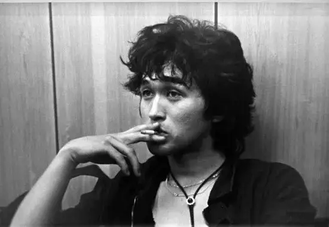
28岁的他竟然是苏联的摇滚教父，俄罗斯人的猫王，被誉为苏联最后的英雄。
他在俄罗斯人的心里，已经是自由的化身。
在苏联有很多以他名字命名的街道，甚至有一个新发现的星球也是以维克多.崔的名字命名。
为了纪念他，在莫斯科的艺术街道老阿尔巴特街2号出现了他的追悼墙（又名痛哭之墙），墙壁上写满了歌迷对他的思念。
“维克多！你永远在我们的心脏里。”
“维克多！你就是我们的生活方式。”
“歌曲或许不能改变世界，但维克多-崔改变了我们。”
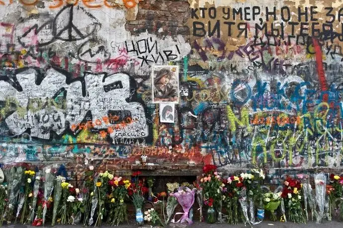
今天，我就为大家科普这位传奇摇滚天才维克多.崔。
1962年，维克多.崔出生于哈萨克斯坦共和国克基乌尔达，父亲是韩裔工程师教师崔东烈，母亲是乌克兰出生的体育教师瓦莲齐娜·巴锡尔耶夫娜。
很巧合，他和崔健同民族、同姓，也同样是社会主义国家的摇滚先锋。
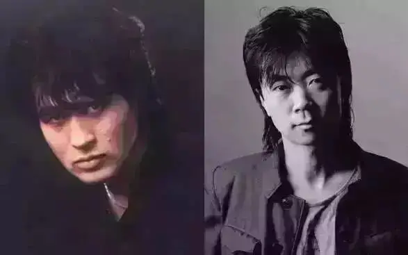
童年时期，维克多.崔一家搬到了列宁格勒。
从小他就表现出对诗歌、音乐、绘画的浓厚兴趣。
15岁的时候，就开始作词作曲。
上世纪七十年代，维克多.崔考上了谢洛夫美术学校。
虽然学的是画画，他对音乐也保持着极强的兴趣，1974年在学校里组织了名叫“第六病室”的摇滚乐队。
当时的苏联，摇滚乐被视为反国家的歌曲，维克多.崔因为演奏摇滚乐被学校勒令退学。
后来，他又上了一所技校，开始学习木刻。
在学校里维克多.崔又结识了一帮志同道合的朋友，1981年组织了名叫 “加林和双曲线”的乐队。
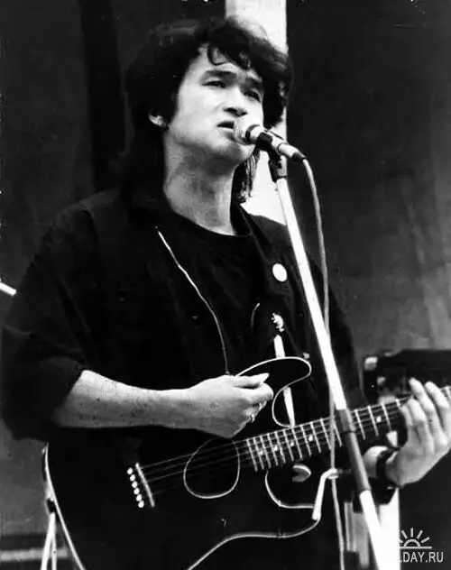
这段时间，维克多.崔逐渐创作了一些歌曲，包括送给初恋女友的《8年级女学生》。
而真正让维克多.崔走上音乐之路的是他在火车上偶遇了俄罗斯当代最出色的摇滚乐队“阿科瓦里姆（Akvarium）”的主唱鲍里斯-格列本许科夫。
维克多.崔在鲍里斯-格列本许科夫面前演奏了自己的作品，获得了对方的赞赏。
后来，鲍里斯-格列本许科夫介绍维克多.崔加盟摇滚乐队协会，这是当时苏联唯一可以公演摇滚乐的组织。
同时协会里也积聚了当时苏联最出色的摇滚音乐人。
这个平台丰富了维克多.崔的音乐风格以及技术。
他的伯乐也给了他最大的支持，不仅协助他组建了苏联历史上最伟大摇滚乐队的KINO（电影），同时还亲自操刀，担任维克多.崔第一张专辑的制作人。
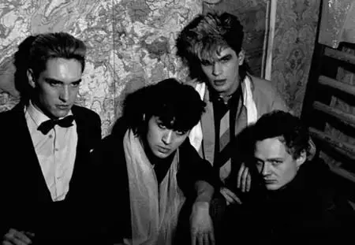
| KINO乐队
1982年KINO的第一张专辑《KINO45》终于出世。
后面的45据说是因为演奏时间共45分钟，维克多-崔即兴打上去的。
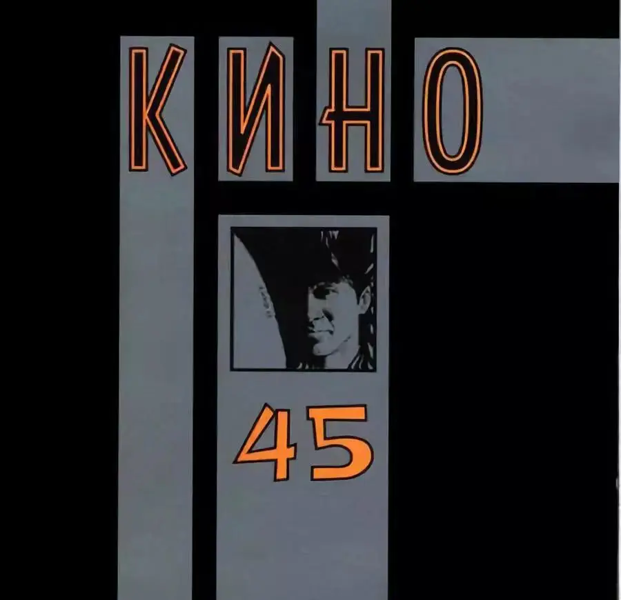
这张专辑并没有引起很大的反响，艰难的生活也让维克多.崔不得不从学校退学。
之后，维克多-崔和KINO陆续发表《The Manager of Kamchatka》、《This is Not Love》等多个专辑。
但是仍然没有太大的反响。
为了生计，维克多-崔在一个热锅炉房工作了很长时间。
他边工作边写歌，后来这个小小的锅炉房成为“自由”和“坚持”的象征。
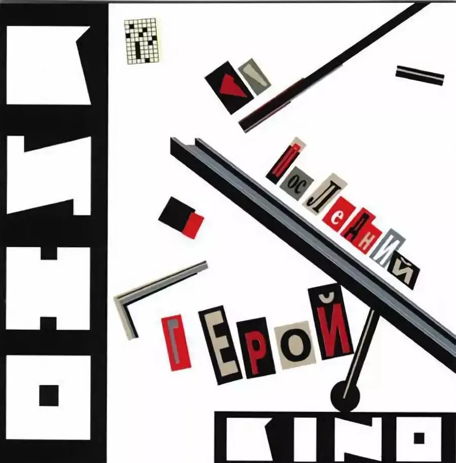
直到1986年《Ночь》(The Night)令维克多-崔和KINO声名大噪。
这张专辑里包含了《平静之夜》以及维克多-崔另一首早期成名曲《最后的英雄》。
在这些作品里，已经显露出维克多-崔的独特天才和音乐风格。
维克多.崔总是用前卫独特的曲风和沙哑低沉的声音唱着一个个高明的政治隐喻。
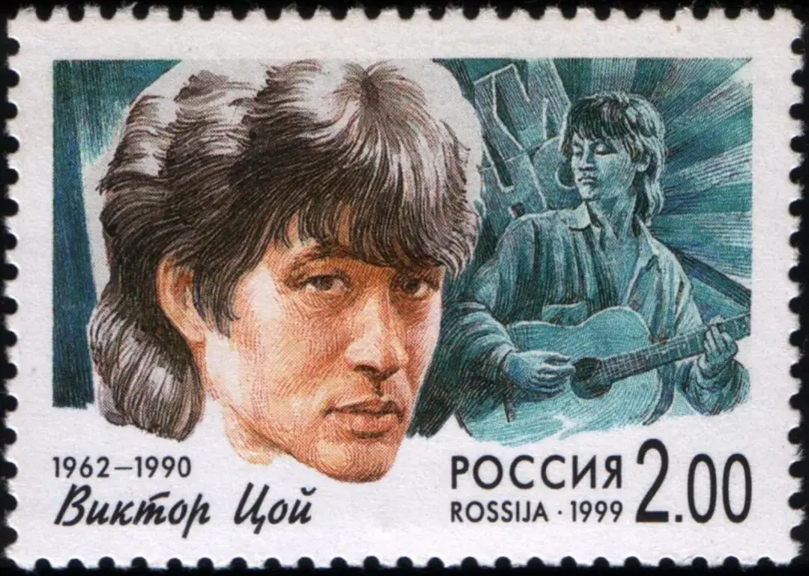
| 纪念邮票
比如说早期的一首《通勤列车》〈 Электричка 〉，描述一名男子坐在火车上，却对自己要去哪里束手无策。
滑动下方区域
查看完整歌词
《通勤列车》
▼
Я вчера слишком поздно лег, сегодня рано встал,
昨夜我休息太晚,今晨又起得太早,
Я вчера слишком поздно лег, я почти не спал.
昨夜我休息太晚,我几乎没睡.
Мне, наверно, с утра нужно было пойти к врачу,
可能今早我就该去看医生,
А теперь электричка везет меня туда, куда я не хочу.
但现在列车载着我开往并不想去的某地.
Электричка везет меня туда, куда я не хочу
列车载着我开往并不想去的某地.
Электричка везет меня туда, куда я не хочу
列车载着我开往并不想去的某地.
В тамбуре холодно, и в то же время как-то тепло,
在门口台阶处,我感到寒冷,同时又感到些事物是温暖的,
В тамбуре накурено, и в то же время как-то свежо.
在门口台阶处,乌烟瘴气,同时又有些事物是清新的.
Почему я молчу, почему не кричу? Молчу.
为何我保持着沉默,为何我不大声呼喊? 沉默着.
Электричка везет меня туда, куда я не хочу
列车载着我开往并不想去的某地.
Электричка везет меня туда, куда я не хочу
列车载着我开往并不想去的某地.
Электричка везет меня туда, куда я не хочу
列车载着我开往并不想去的某地.
接下来的两年，更多的经典诞生，维克多.崔逐渐从地下转为地上并风靡全国。
其中最为经典的《血液型》。
滑动下方区域
查看完整歌词
《血液型》
▼
Теплое место
虽有温暖的安乐窝
Но улицы ждут oтпечатков наших ног
但街道在等待我们的脚印
Звездная пыль - на сапогах.
如星光的尘埃落在靴子上
Мягкое кресло, клетчатый плед,
舒适的沙发，格子的纹络
Не нажатый вовремя курок.
没有按时扣动的扳机
Солнечный день - в ослепительных снах.
阳光灿烂的日子只存在于盲目的睡梦中
Группа крови - на рукаве,
我的袖口上记着血型
Мой порядковый номер - на рукаве,
我的袖口上有我的军号
Пожелай мне удачи в бою, пожелай мне:
为冲向战场的我祈祷吧 为我祈祷吧
Не остаться в этой траве,
别留在原野上
Не остаться в этой траве.
别留在原野上
Пожелай мне удачи, пожелай мне удачи!
祈祷我的胜利 为我的胜利祈祷吧
И есть чем платить, но я не хочу
虽然需要付出代价
Победы любой ценой.
但我不想用任何价值换取胜利
Я никому не хочу ставить ногу на грудь.
谁的胸膛我也不想践踏
Я хотел бы остаться с тобой,
我想留在你的身边
Просто остаться с тобой,
只是和你在一起
Но высокая в небе звезда зовет меня в путь.
但是高空的星辰在召我上路
Группа крови - на рукаве,
我的袖口上记着血型
Мой порядковый номер - на рукаве,
我的袖口上有我的军号
Пожелай мне удачи в бою, пожелай мне:
为冲向战场的我祈祷吧 为我祈祷吧
Не остаться в этой траве,
别留在原野上
Не остаться в этой траве.
别留在原野上
Пожелай мне удачи, пожелай мне удачи
祈祷我的胜利 为我的胜利祈祷吧
这首歌鼓舞了无数年轻人勇敢挑战体制和追求自由。
一次，KINO受邀去切利亚宾斯克的一所大学进行演出，但是KINO却遭到警察的软禁。
学生听到KINO被软禁的消息，一传十十传百，学生们进行了蜡烛示威。
手持蜡烛的年轻人们包围着警察局，高声呐喊“把KINO还给我们！”“我们要维克多-崔！”
最终，为防众怒，警察不得不允许KINO演出。
很快学校操场上想起了维克多-崔和学生们齐声喊唱的“血液型”歌声。
维克多-崔对当时年轻人的影响不可估量，大家在他的歌声里受到极大鼓舞，纷纷寻求改变。
就像维克多-崔的《改变》所唱：
代替热气的绿色的玻璃
待其火焰的袅袅烟火
月历中的一天就这样消亡
红色的太阳燃尽
一天也随着燃尽
燃烧的都市里落下夜色
变化！我们的心脏在要求
变化！我们的眼睛在要求
在我们的笑容和我们的眼泪中
还有我们静脉的脉搏里
变化！我们等待变化
同样类似的还有非常经典的《布谷鸟》，它也是之前俄罗斯电影《女狙击手》的主题曲。
网上有段对《布谷鸟》的评价非常到位：
“这首经典被多人翻唱，那时的维克多-崔正用最本真的声音在歌唱内心，用最富有诗意与情感的旋律打动人心。
原唱版本相较于其他翻唱版本来说，阴郁气息和摇滚味更为厚重一些，从中间和最后主唱的呐喊以及电吉他的轰鸣就可以感受到这点。
不过不得不承认，它的前奏无与伦比的精美和细致情感低潮时温柔的低语让人感动。它是镶嵌在冷硬外表下的铁骨柔情吗？还是躲藏在天使背后的魔鬼？ ”
滑动下方区域
查看完整歌词
《布谷鸟》
▼
Песен ещё не написанных сколько?还有多少歌未写完？Скажи, кукушка告诉我，布谷鸟Пропой唱吧В городе мне жить или на выселках我在这座城市生活或是迁徙中落脚？Камнем лежать или гореть звездой?做一块无声的石头还是燃烧的流星？Звездой流星
Солнце моё, взгляни на меня
我的太阳，你看着我
Моя ладонь превратилась в кулак
我的手紧握成拳
И, если есть порох, дай огня
如果还有火药，给我火
Вот так
就这样
Кто пойдёт по следу одинокому?
是谁沿着孤独的脚印走下了去？
Сильные да смелые головы сложили в поле, в бою
英勇的战士在这田野、这战场上抛头颅，洒热血
Мало кто остался в светлой памяти,
却无几人能够留在鲜明的记忆中
В трезвом уме да с твердой рукой в строю, в строю.
留在清醒的头脑中，依然是铁拳紧握，立于行伍
Солнце моё, взгляни на меня
我的太阳，你看着我
Моя ладонь превратилась в кулак
我的手紧握成拳
И, если есть порох, дай огня
如果还有火药，给我火
Вот так
就这样
Где же ты теперь, воля вольная?
哪里还有，自由的意志？
С кем же ты сейчас ласковый рассвет встречаешь?
你在和谁一起迎接和煦的黎明？
Ответь
回答我
Хорошо с тобой, да плохо без тебя,
和你在一起多好，没有你就多糟
Голову на плечи терпеливые под плеть,
坚忍的肩膀上头颅迎着的是鞭子
под плеть
鞭子
Ты солнце моё, взгляни на меня
我的太阳，你看着我
Моя ладонь превратилась в кулак
我的手紧握成拳
И, если есть порох, дай огня
如果还有火药，给我火
Вот так
就这样
Солнце моё, взгляни на меня
我的太阳，你看着我
Моя ладонь превратилась в кулак
我的手紧握成拳
И, если есть порох, дай огня
如果还有火药，给我火
Вот так
就这样
| 布谷鸟现场版
维克多.崔也通过音乐反对战争，他的作品《 我宣布我的家是[无核区]》大胆质疑苏联发动阿富汗战争的动机，对参加战争的年轻人有着深远的影响。
除了音乐，维克多-崔也参与了电影演出，比较有代表性的是哈萨克斯坦新浪潮的作品《针》。
电影讲了维克多-崔拯救一个吸毒女孩摆脱毒品和黑社会纠缠的故事，充满了年轻人的反叛和活力。
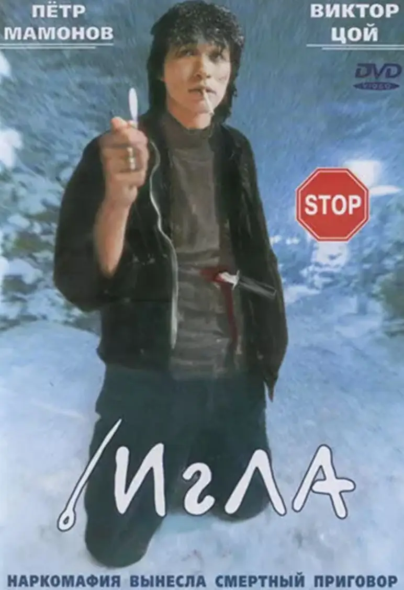
片尾出现的《血型歌》令人印象深刻：
1990年，维克多-崔迎来了他的巅峰时期。
6月24日，旧苏联历史上从未有过的事情在莫斯科奥林匹克体育场发生，奥林匹克体育场的圣火为了KINO乐队的公演燃起。
在和创下纪录的10多万观众一起，维克多-崔唱起了“血液型”，尤其是唱最后一曲“变化”的时候，整个体育场因为歌声在颤动。
结束最后一曲后，维克多-崔想歌迷摇手致意，说了最后一句话：“过不多久的夏天，新专辑就出来了，到时候再见。”
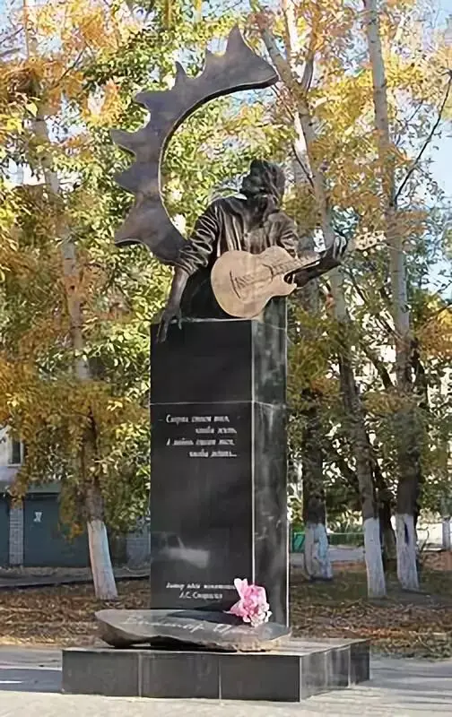
| 纪念雕像
不过，维克多-崔未能遵守这个诺言。
就像黄家驹一样，高唱了理想、自由和爱情，创作了无数充满真情实意的作品，同样留下了经典的反战歌曲，且都举办了旷世的现场演唱会后，他们也都在巅峰时期突然告别了世界。
令人唏嘘，也留给大家无限的想象和怀念。
更有意思的是，黄家驹是1962年6月10日，11天后的1962年6月21日维克多.崔诞生。
就像黄家驹“原谅我不羁放纵爱自由，也会怕有一天会跌倒”的一语成谶。
维克多-崔似乎也早有预感，他曾说“我们是率先成熟的果子，死神会率先扑向我们。”
8月17日，苏联主要报纸之一的共青团真理报对全国青年作出了有关崔以及其想法的评论：
维克多·崔所带给全国青年的影响更甚于任何一位政治家、名人以及作家。这是因为他从来不欺骗也不出卖别人，他勇于做自己，要不相信他是不可能的...
崔是一个纯粹的Rocker，他的大众形象与他的真实生活并没有什么不同，他以他唱出的方式生活着。
维克多·崔是摇滚界最后的英雄。
我相信，维克多·崔将来一定会成为中国人家喻户晓的歌手。
他的歌对我们的胃口！
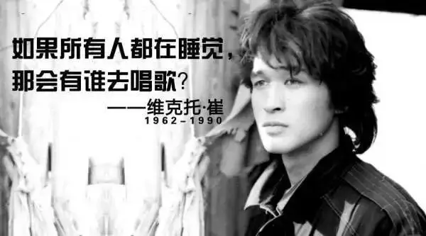
点击阅读原文观看
维克多·崔最后的演唱会
相关推荐：
《举报者》| 别人有忏悔录，我们有厚黑学
这是一部绝不可辜负的经典
十个破土而出的希望
击垮纳粹独裁的六份传单
《乡愁》 | 没有一个人能够将信仰拍的如此诗意和凝重
100双绝望的眼睛
奥斯卡影帝，你把自己演死了
六百击 | 为了梦想，也为了尿不湿
这里没有挑逗你眼目情欲的小鲜肉
也没有挑动你肉体情欲的段子
更没有膨胀你今生骄傲的鸡血
我们只在乎那些最质朴真诚的作品
在那里我们才能恢复真正的想象力
我们也坚信这才是我们真正需要的

ID:Six_hundred_hits
长按二维码，一键关注
【六百击】
-END-
电影评论
尽情分享朋友圈

苹果打赏
通道
小提示：文末广告是腾讯配送广告，内容与本号无关，但您的每次点击（无需反复点）都会给平台带来几毛收益，欢迎您点击支持六百击。